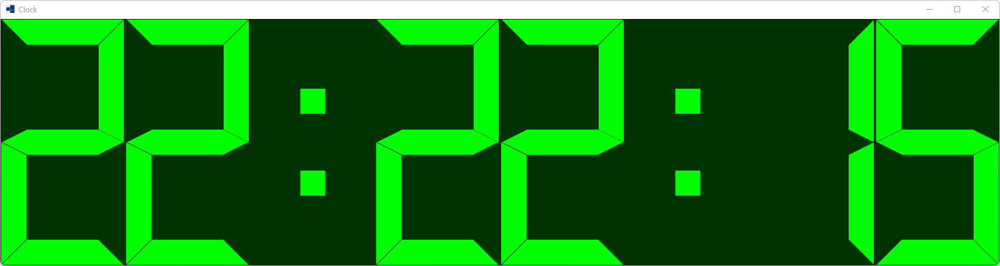
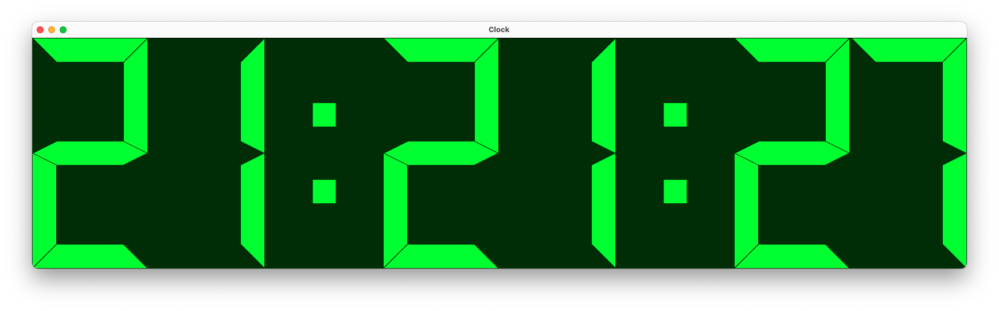
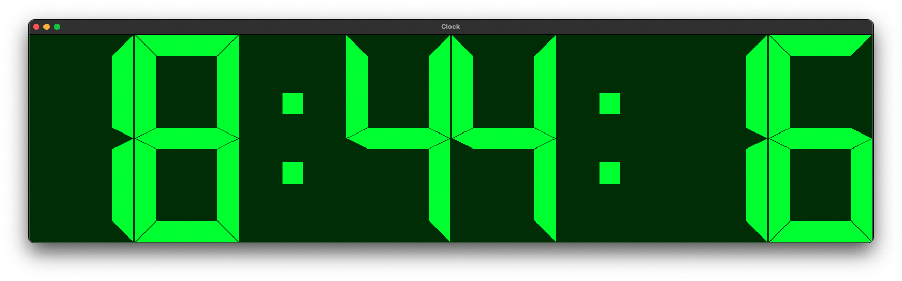
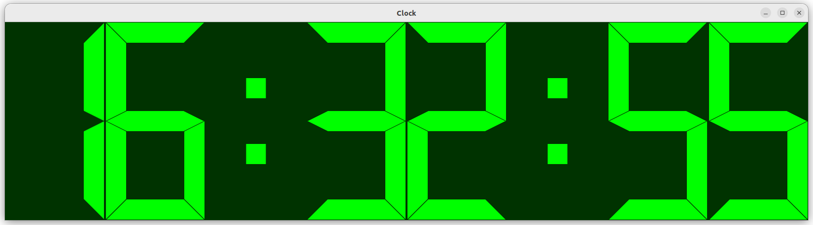
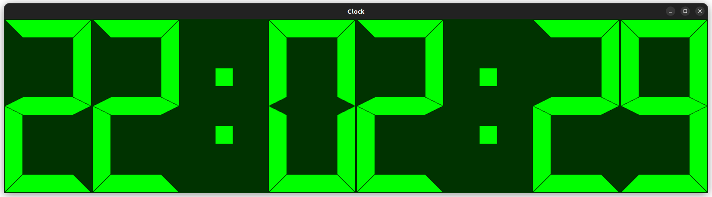

|
xtd
0.2.0
|
Loading...
Searching...
No Matches
clock.cpp
demonstrates the use of xtd::forms::lcd_label control.
- Windows
- 

- macOS
- 

- Gnome
- 

#include <xtd/forms/application>
#include <xtd/forms/form>
#include <xtd/forms/lcd_label>
#include <xtd/forms/timer>
using namespace xtd;
using namespace xtd::drawing;
using namespace xtd::forms;
auto main()->int {
auto show_seconds = true;
clock_timer.interval(100_ms);
clock_timer.enabled(true);
form_main.start_position(form_start_position::center_screen);
form_main.auto_size_mode(forms::auto_size_mode::grow_and_shrink);
form_main.auto_size(true);
label.digit_spacing(4);
label.segment_style(segment_style::modern);
label.show_back_digit(false);
clock_timer.tick += [&] {
auto now = date_time::now();
label.text(show_seconds ? now.to_long_time_string() : now.to_short_time_string().replace(':', now.second() % 2 ? ' ' : ':'));
form_main.center_to_screen();
};
application::run(form_main);
}
virtual const xtd::ustring & text() const noexcept
Gets the text associated with this control.
virtual drawing::color fore_color() const noexcept
Gets the foreground color of the control.
event< control, event_handler > click
Occurs when the xtd::forms::control is clicked.
Definition control.h:1134
virtual drawing::color back_color() const noexcept
Gets the background color for the control.
virtual bool auto_size() const noexcept
Gets a value that indicates whether the control resizes based on its contents.
virtual std::optional< control_ref > parent() const noexcept
Gets the parent container of the control.
Represents a window or dialog box that makes up an application's user interface.
Definition form.h:52
Implements a timer that raises an event at user-defined intervals. This timer is optimized for use in...
Definition timer.h:36
virtual time_span interval() const noexcept
Gets the time, in milliseconds, before the tick event is raised relative to the last occurrence of th...
The xtd::drawing namespace provides access to GDI+ basic graphics functionality. More advanced functi...
Definition actions_system_images.h:11
The xtd::forms namespace contains classes for creating Windows-based applications that take full adva...
Definition about_box.h:13
The xtd namespace contains all fundamental classes to access Hardware, Os, System,...
Definition system_report.h:17
Generated on Fri Sep 15 2023 08:56:41 for xtd by Gammasoft. All rights reserved.